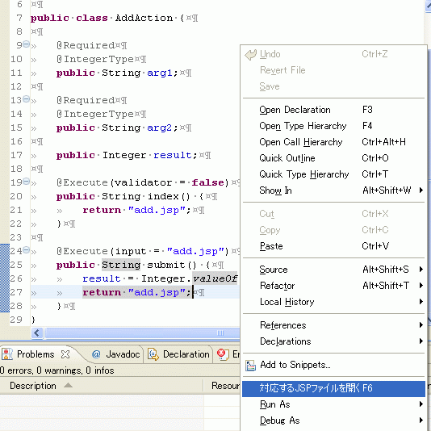
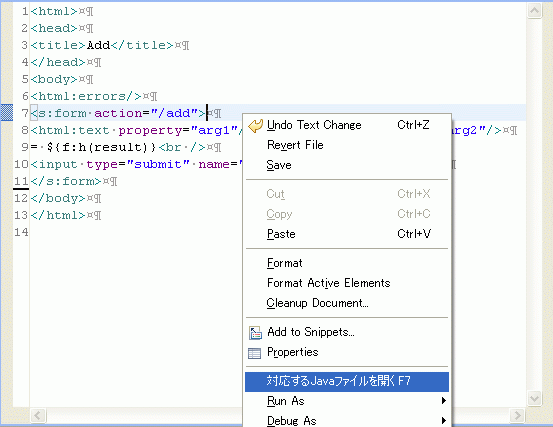

SAStrutsPlugin
Overview
SAStrutsPlugin is an Eclipse plugin to assist your development work with SAStruts. It has the following features:
- Opens/creates a JSP file corresponding to a Java source file (which is an SAStruts action class) via the context menu or by a keyboard shortcut (F6)
- Opens/creates a Java source file corresponding to a JSP flie via the popup menu or by a keyboard shortcut (F7).
Usage
Project setting
- In the Properties of your project, select "SAStruts", then specify Webapp Root.
- In the Properties of your project, select "SAStruts", then specify Main Java Source Path.
- In the Properties of your project, select "SAStruts" , then specify convention.dicon Path.
For example, in the case of Super Agile Struts Tutorial(sa-struts-tutorial), you have to specify those parameters as "/webapp", "/src/main/java" and "/src/main/resouces/convention.dicon". For a web application project of Maven2 [i.e. maven-archetype-webapp], Webapp Root must be specified as "/src/main/webapp".
SAStrutsPlugin obtains JSP file paths, Java file paths and root packages from Webapp Root, Main Java Source Path and convention.dicon Path, respectively.
Open the JSP file
In an SAStruts action source code, place the text cursor on the line where JSP file name string is present, then use the context menu or hit the shortcut key(F6) to open the corresponding JSP file.
Creating the JSP file
- When no corresponding JSP file to open is found, a message box appears. [NOTE: The following screenshots are in Japanese. If you use a non-Japanese environment, the message will be as this: "JSP file is not found. / Create a corresponding JSP file?"]
- By clicking OK, "Create a new JSP file" wizard appears. The file name of the JSP file and the folder to save in are automatically determined, so no modification is required in most cases.
When no corresponding JSP file to open is found, you can create a new one with a wizard. The file name and the folder to save in are automatically determined, and no modification is required in most cases.


Open the JAVA file
In a JSP source code, place the text cursor on the line where action attribute of s:form tag is present, then use the context menu or hit the shortcut key (F7) to open the corresponding JAVA source file.
Creating the JAVA file
- When no corresponding JAVA file to open is found, a message box appears. [ For a non-Japanese environment, the message will be: "Java file is not found. / Create a corresponding Java file? ". ]
- By clicking OK, "Create a new Java file" wizard appears. The file name of the JAVA file and the folder to save in are automatically determined, so no modification is required in most cases.
When no corresponding JAVA file to open is found, you can create a new one with a wizard. The file name and the folder to save in are automatically determined, and no modification is required in most cases.


Setting up
SAStrutsPlugin works with Eclipse3.3+WTP2.0. The JAVA file can be opened from JSP Editor. You cannot open the one from Web page Editor. Go to the following update site and select "SAStrutsPlugin" to install.
NEWS
- 2008/03/22 SAStrutsPlugin 0.0.2 is released.
- 2008/03/14 SAStrutsPlugin 0.0.1 is released.
Mailing List
- seasar-user
- A mailing list for users of Seasar2 and related products.
For questions, troubles or any suggestions on SAStrutsPlugin, use this list.
- seasar-dev
- A mailing list for developers of Seasar2 and related products.
Tracking
- JIRA
- Bugs of SAStrutsPlugin are managed using a component named SAStruts plugin.
Subversion Repository
For questions, troubles or any suggestions on SAStrutsPlugin, use this list.
- JIRA
- Bugs of SAStrutsPlugin are managed using a component named SAStruts plugin.
Subversion Repository
SAStrutsPlugin source code is available from the Subversion repository of seasar.org. Everyone can access it to view. (Follow the link below to view sourcecode on the Web)
- URL for the SVN repository
- https://www.seasar.org/svn/sastruts/trunk/sa-struts-plugin/
Committer's blog
Specifications of SAStrutsPlugin are discussed mainly on the committer's blog.